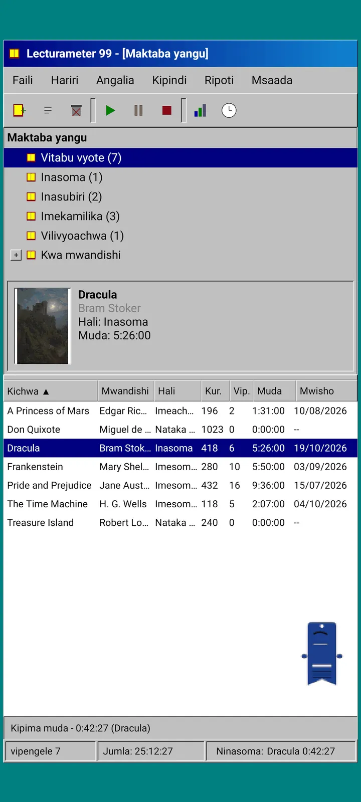
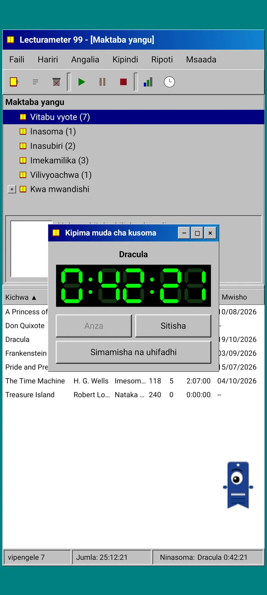
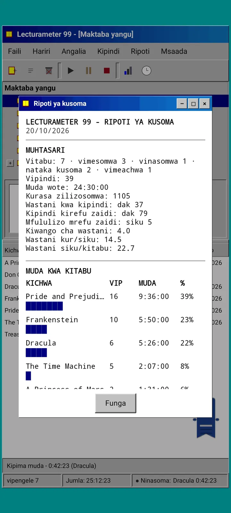
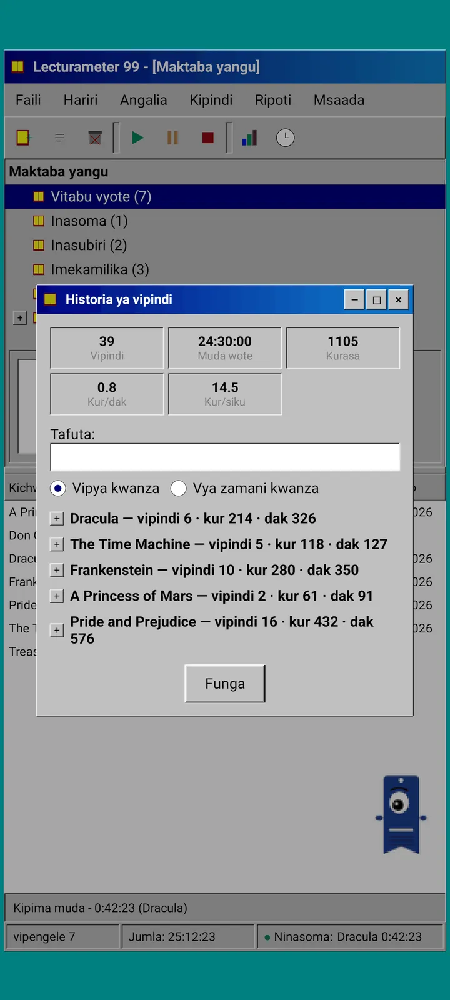
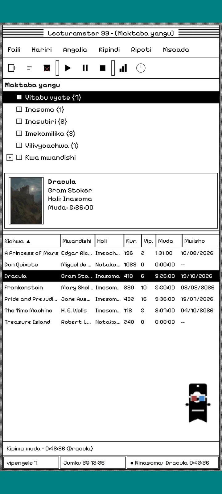
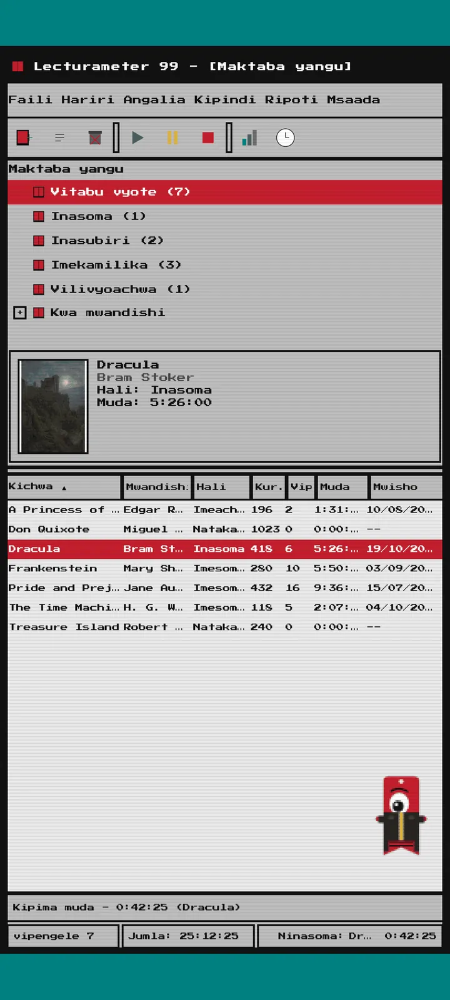
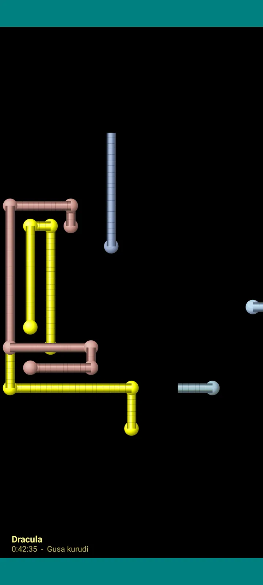

Lecturameter 1999
Lecturameter kana kwamba uliisakinisha kutoka CD-ROM mwaka 1999. Programu mbadala ya programu, yenye madirisha, menyu na majedwali, inayofungua nakala rudufu zako halisi.

Ni nini
Programu ya kompyuta ya mwishoni mwa miaka ya tisini inayoendeshwa kwenye simu yako. Dirisha moja juu ya eneo-kazi la rangi ya bluu-kijani, upau wa menyu, upau wa zana, mti wa folda, jedwali nene na upau wa hali.
- Mti wa maktaba: vitabu vyote, vinavyosomwa, vinavyosubiri, vilivyokamilika, vilivyoachwa na kwa mwandishi
- Jedwali lenye kichwa, mwandishi, hali, kurasa, vipindi, muda na usomaji wa mwisho. Gusa kichwa cha safu ili kupanga
- Utafutaji halisi wa vitabu, ukitumia orodha ileile inayotumiwa na Lecturameter
- Huleta na kuhamisha nakala rudufu ya Lecturameter na CSV ya Goodreads. Data yako huingia na kutoka bila kupoteza chochote

Kwa nini ipo
Jaribio: kujenga upya wazo la Lecturameter kuanzia mwanzo chini ya misingi tofauti kabisa ya muundo, bila kugusa programu halisi. Kati ya tafsiri zote, ile ya 1999 ndiyo niliyoipenda zaidi, kwa hiyo niliikamilisha kama zoezi la kufurahisha na kuigeuza kuwa programu kamili. Ni rahisi kuliko Lecturameter kwa makusudi: ni jaribio na, kwa kanuni, haitaendelezwa zaidi.
- Kipima muda katika dirisha linaloelea lenye onyesho la kijani la LCD. Husogea, hupunguzwa hadi upau wa kazi na huendelea kuhesabu kwenye upau wa hali
- Ukisimamisha, kidirisha cha kuhifadhi kipindi huuliza kurasa zako na hukokotoa kasi yako, kama Lecturameter
- Vipindi vilivyohifadhiwa ni vipindi vya Lecturameter: vinarudi kwenye programu ya kisasa ukihamisha nakala rudufu ya Lecturameter 1999 na kuiingiza kwenye Lecturameter.

Ripoti ya usomaji
Takwimu ni ripoti iliyochapishwa: muhtasari, muda kwa kila kitabu kwa nguzo za vizuizi, kasi kwa kurasa kwa siku, kalenda ya mwaka iliyochorwa kwa herufi na siku saba za mwisho.

Historia ya vipindi
Vipindi vilivyopangwa kwa kitabu katika mti wenye pamoja na toa, na takwimu tano juu: vipindi, muda wote, kurasa, kurasa kwa dakika na kurasa kwa siku.

Hifadhi kipindi
Tarehe, dakika, ukurasa wa kwanza na wa mwisho, maoni. Muhtasari hukokotoa kurasa na kasi unapoandika. Ukifikia ukurasa wa mwisho, huuliza kama umemaliza kitabu.

Pagi 99
Pagi anasafiri hadi 1999 pia: wa pikseli na huru kwenye skrini kama wasaidizi wa ofisini wa wakati huo. Unaweza kumburuta, anasema sentensi ukimgusa na anaonyesha vidokezo kwenye puto za njano.
Mandhari
Classic 98 ni bure na ndiyo chaguo-msingi. Kifurushi huongeza sita zaidi, kila moja na usuli wake na sauti zake.

Ichague kutoka kwenye menyu ya Tazama
Tazama, Mandhari... hufungua dirisha lenye mandhari saba. Mabadiliko hufika kwenye madirisha yote, kipima muda na Pagi kwa wakati mmoja.
- Classic 98, bure na chaguo-msingi: madirisha ya kijivu, pau za kichwa za buluu ya bahari na eneo-kazi la bluu-kijani
- Kifurushi cha mandhari: 1984, Gumdrop, Memory, Towers, Core na 8-bit
- Kila mandhari huja na usuli wake wa eneo-kazi na sauti zake za kugusa, madirisha na kipima muda
- Tazama, Sauti za mandhari huzima sauti ukisoma kwa kimya

Classic 98
Madirisha ya kijivu, pau za kichwa za buluu ya bahari na eneo-kazi la bluu-kijani. Bure, ndiyo ambayo programu hufunguka nayo.

1984
Eneo-kazi la biti moja nyeusi na nyeupe, lenye michoro ya vitone na madirisha ya mraba.

Gumdrop
Plastiki ya rangi inayopitisha mwanga, vitufe vya mviringo na mistari kwenye usuli.

Memory
Menyu za kiweko cha diski cha miaka ya tisini, katika rangi za buluu iliyokolea.

Towers
Kiweko kingine cha diski cha miaka ya tisini, buluu ya usiku yenye mistari ya buluu hafifu.

Core
Kiweko cheusi na cha kijani, kama skrini isiyozimika kamwe.

8-bit
Pikseli nene, rangi chache na herufi za vitalu.

Ijaribu kabla ya kulipa
Gusa mandhari iliyofungwa na programu nzima hubadilika kuwa hiyo. Ukifunga bila kununua, mandhari ya awali hurudi.
Vilinda skrini
Huonekana tu kipima muda kinapofanya kazi na unaiacha simu. Husubiri dakika 1, 3 au 5, au kamwe. Mguso mmoja hukurudisha na kipima muda huendelea kuhesabu.

Vitabu vinavyoruka
Vitabu vya pikseli vikipiga mabawa ya majalada yao kwenye skrini nyeusi.

Uwanja wa herufi
Herufi za alfabeti nyingi zikipita polepole, kama uwanja wa nyota.

Mabomba ya kurasa
Mabomba yaliyotengenezwa kwa kurasa yanayojichora hadi skrini ijae.

Pagi anayerukaruka
Pagi akigonga kingo za skrini na kurudi.

Saa ya kusoma
Muda wa kipindi kwa tarakimu kubwa za LCD.

Mavazi ya Pagi
Mavazi manane ya Pagi 99. Unayachagua katika Tazama, Vazi la Pagi..., na unaweza kuyajaribu kabla ya kulipa.
- Kicheza kaseti
- Kofia iliyovaliwa kinyume
- Miwani ya 3D
- Miwani ya jua ya neon
- Diski flopi mkononi
- Koti la ngozi
- Kipenzi cha mfukoni
- Taji ya kadibodi
Duka
Programu ni bure na kamili kwa kurekodi usomaji wako. Unachoweza kununua kinabadilisha tu mwonekano.
Programu nzima, bila kikomo cha muda.
- Maktaba, utafutaji, kipima muda na vipindi
- Ripoti ya usomaji na historia ya vipindi
- Nakala rudufu ya Lecturameter na CSV ya Goodreads, kuleta na kuhamisha
- Mandhari ya Classic 98 na Pagi 99
- Bila akaunti na bila matangazo
Malipo ya mara moja, bila usajili.
- Kifurushi cha mandhari, €3.49: mandhari 6 zenye usuli na sauti, pamoja na vilinda skrini
- Vilinda skrini, €1.99: vilinda skrini 5
- Mavazi ya Pagi, €1.99: mavazi 8
- 1999 nzima, €4.49: mandhari, vilinda skrini na mavazi
Zawadi za hiari kwenye menyu ya Msaada, kama unataka kuninunulia kahawa.
Mandhari na mavazi vinaweza kujaribiwa moja kwa moja kabla ya kulipa. Ukifunga bila kununua, ulichokuwa nacho kinarudi.
Kinachobadilika ikilinganishwa na Lecturameter
Sawa na Lecturameter
- Data ileile: vitabu, vipindi, hali, alama na madokezo. Faili ya nakala rudufu ni ileile katika programu zote mbili.
- Utafutaji wa vitabu kwa kichwa au mwandishi.
- Kipima muda halisi: huendelea kuhesabu chinichini na hata ukifunga programu.
- Bila akaunti, bila matangazo, bila muunganisho isipokuwa kutafuta vitabu.
- Lugha zilezile za Lecturameter.
Katika toleo la 1999 pekee
- Kiolesura cha eneo-kazi cha 1999. Bila Material.
- Madirisha halisi: unayaburuta, kuyapunguza na kuyafunga kwa msalaba.
- Ripoti ya usomaji kwa maandishi, yenye kalenda iliyochorwa kwa herufi.
- Menyu ya muktadha kwa kubonyeza kwa muda mrefu na njia za mkato za kibodi ukiunganisha kibodi.
- Pagi 99 wa pikseli mwenye puto za vidokezo.
- Mandhari za hiari zenye usuli na sauti zake, vilinda skrini kipima muda kinapofanya kazi na mavazi ya Pagi.
Kinachoachwa nje, kwa makusudi
- Bila Pro na bila usajili. Kurekodi usomaji wako ni bure kabisa, duka linauza mwonekano tu.
- Bila changamoto, bingo, Wrapped ya mwaka wala wijeti.
- Bila kipindi cha kuzama, sauti za mazingira wala nakala rudufu ya Google Drive. Nakala rudufu huhifadhiwa kama faili.
Jaribio lililofungwa
Lecturameter 1999 iko katika jaribio lililofungwa kwenye Google Play. iOS itakuja baadaye, bila tarehe bado.
- Jiunge na kikundi groups.google.com/g/lecturameter-1999
- Jisajili kama mjaribu katika play.google.com/apps/testing/com.lecturameter.r1999
- Isakinishe kutoka Google Play
Katika jaribio lililofungwa kwenye Google Play, iOS baadaye. Soma makala ya blogu kuona inatoka wapi na nini cha kutarajia.